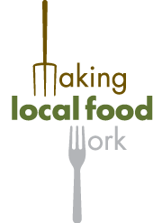

| Details |
An event bringing together people involved or interested in food-related projects and organisations across Sheffield, to meet each other and learn about the current developments around food for Sheffield.

The programme will include presentations on:
- A draft of the Sheffield food plan
- Plans for the Sheffield food festival
- Initial directions on a Sheffield food partnership
- Results of the Sheffield area CPRE Mapping Local Food Webs research
- Future plans for Making Local Food Work in Sheffield
- Sheffield's Green and Open Spaces Strategy
- Food related research at Sheffield Hallam University
- Sheffield's rapidly growing Transition movement
- Urban food growing and harvesting initiatives
- Co-operative working to create sustainable food systems
- City farms, allotments, leisure gardens, community supported agriculture and more...
£7.50/5.50 concesssions including light refreshments (lunch available see cost/options)
Admission price covers the costs of venue hire, refreshments and event administration. This event is organised by Regather local service co-op, which receives no funding or sponsorship and operates on an independent, co-operative, non-profit basis to provide a range of services to people and organisations who want to get things done.
Info and tickets www.feeding500k.eventbrite.com |